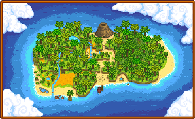

Island Trader
Jump to navigation
Jump to search
| Island Trader | |
 | |
| Open Hours: | Always |
| Address: | Ginger Island |
| Occupants: | |
The Island Trader is a bluebird merchant located on the North side of Ginger Island. Like the Desert Trader, the Island Trader does not accept gold but only barters in exchange for other items.
The Island Trader is unlocked for  10 Golden Walnuts after purchasing the Island Farmhouse.
10 Golden Walnuts after purchasing the Island Farmhouse.
Fixed Stock
| Image | Name | Description | Price |
|---|---|---|---|
| Warp Totem: Farm | Warp directly to your house. Consumed on use. | ||
| Taro Tuber | Plant these in warm weather. Takes 10 days to mature. Grows faster if planted near a body of water. | ||
| Pineapple Seeds | Plant these in warm weather. Takes 14 days to mature, and keeps producing fruit after that. | ||
| Golden Coconut | This is one tough nut to crack, but a professional might be able to break it open. (Only available after cracking at least one Golden Coconut) |
||
| Tropical TV | Can be placed inside your house. | ||
| Jungle Torch | Can be placed as decoration. | ||
| Banana Sapling | Takes 28 days to produce a mature Banana tree. Bears fruit in the summer, or all year round when planted on Ginger Island. | ||
| Mango Sapling | Takes 28 days to produce a mature Mango tree. Bears fruit in the summer, or all year round when planted on Ginger Island. | ||
| Wild Double Bed | Can be placed inside your house. | ||
| Tropical Bed | Can be placed inside your house. | ||
| Mahogany Seed | This can be planted to grow a mahogany tree. | ||
| Luau Skirt | A skirt destined to make you the 'luau' the party! | ||
| Banana Pudding Recipe | A recipe to make Banana Pudding | ||
| Deluxe Retaining Soil Recipe | A recipe to make Deluxe Retaining Soil |
Rotating Stock
| Image | Name | Description | Price | Day Sold |
|---|---|---|---|---|
| Tropical Chair | Can be placed inside your house. | Even Days of the season | ||
| Small Cap | It's a more aerodynamic style of cap. | Every Monday | ||
| Palm Wall Ornament | Can be placed inside your house. | Every Tuesday | ||
| Bluebird Mask | Wear this to look just like your favorite island trader. | Every Wednesday | ||
| 'Volcano' Photo | Can be placed inside your house. | Every Thursday | ||
| Deluxe Cowboy Hat | A cowboy hat with a more extreme shape. | Every Friday | ||
| Oceanic Rug | Can be placed inside your house. | Every Saturday | ||
| Tropical Double Bed | Can be placed inside your house. | Every Sunday | ||
| Galaxy Soul | Forge 3 of these into a Galaxy weapon to unleash its final form. (Available after killing at least 50 dangerous monsters[1]) |
Last Day of Season |
References
- ↑ See Locations.IslandNorth::getIslandMerchantTradeStock in the game code.
History
- 1.5: Introduced.
| Buildings | ||
|---|---|---|
| Merchants | Abandoned House • Adventurer's Guild • Blacksmith • Bookseller • Carpenter's Shop • Casino • Desert Trader • Fish Shop • Giant Stump • Harvey's Clinic • Ice Cream Stand • Island Trader • JojaMart • Marnie's Ranch • Oasis • Pierre's General Store • Qi's Walnut Room • The Stardrop Saloon • Traveling Cart • Volcano Dwarf • Wizard's Tower | |
| Houses | 1 River Road • 2 River Road • 1 Willow Lane • 2 Willow Lane • 24 Mountain Road • Elliott's Cabin • Farmhouse • Island Farmhouse • Leah's Cottage • Mayor's Manor • Tent • Trailer • Treehouse | |
| Farm Buildings | Farming | Barn • Cabin • Coop • Fish Pond • Greenhouse • Mill • Pet Bowl • Shed • Silo • Slime Hutch • Stable • Well |
| Special | Desert Obelisk • Earth Obelisk • Farm Obelisk • Gold Clock • Island Obelisk • Junimo Hut • Water Obelisk | |
| Other Buildings | Community Center • Dog Pen • Island Field Office • Joja Warehouse • Movie Theater • Museum • Spa • Witch's Hut | |